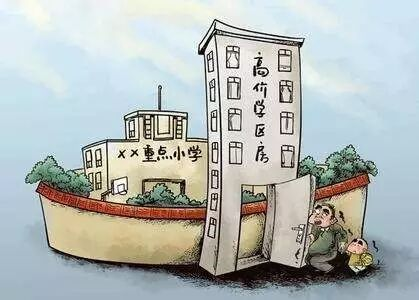
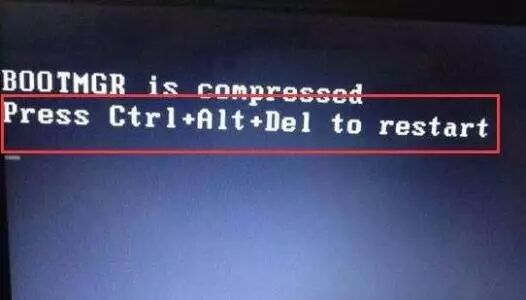

Time：19:30-21:00, Friday, June 16th
Position: 北航新主楼永嘉驿站（现改名为元创易站）旁边靠近新主楼的小广场

北航头马今年首次户外会议各位小伙伴不容错过呀！详细地址请看上面Position信息
Table topic
House
Toastmaster: Qiqi
Table Topics Master: Grace

Now we are in Beijing, the capital of ourcountry, a city with a population of more than 23 million people. Only a little partof people can afford ahouse in Beijing. The house price in Beijing pushes hugepressure on everyone, especially young graduated boys.Studying and working inBeijing, what’s your biggest pressure? I believe that many people wouldconsider the house price as one of their first concern. At this point, it seemsthat it’s very necessary to discuss this topic.
Prepared speech part (CC)
Tony CC4——Discover a different me
Everyone has their own dreams. To fulfill our dreams,we make great efforts, study hard and work hard. Tony is also a hardworkingboy. He has a dream to go abroad so he studies English very hard. After joiningToastmaster, we can see his improvements step by step. In the process ofpursuing his dreams, he gradually found a new himself. What exactly happened tohim? Let’s look forward to his story.
Milton CC4—Restart

Milton is a PhD candidate in computer science. As aPh.d, he always has unique and deep insights about many things. In his life, healways likes to break his limitations. There are so many challenges in hisresearch. What he needs to do is to face these challenges, conquer them andhave a restart. In our life, we do need to restart a new period sometimes. Thatneeds great courage and power. So how did Milton restart his new life?Pleasecome to Toastmaster to listen to his story.

What is Toastmasters
Toastmasters International (TI) is a nonprofit educational organization that operates clubs worldwide for the purpose of helping members improve their communication, public speaking, and leadership skills.
You can find us by the following map of Beihang University.

https://mp.weixin.qq.com/s/rlwv9qHGKLOFUCfbaypSbQ
本页为抢救式本地归档，图文已永久保存。